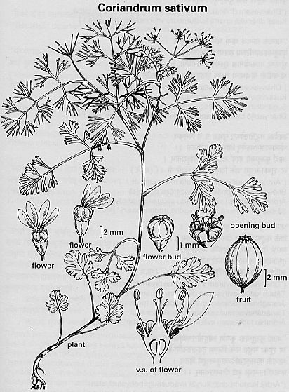

Coriandrum sativum L.
Taxonomic Details

----- Correct Name
----- Classification
----- Synonyms
----- Common Names
Other Biological Details
----- Habit and Habitat
----- Diagnostic Features
----- Reproductive Biology
---------- Breeding System
---------- Phenology
---------- Pollinators
---------- Seed Biology
-----------Seed Germination
------ Cultivation
----- Major Pests and Diseases
Economic Potential and Uses
----- Parts Used
-----Uses
----- Harvesting Practices
----- Produce and Products
----- Chemistry
----- Processing Techniques
----- Other uses
----- Economic Potential to the Country
----- Export Potential
Miscellaneous Information
Literature
Taxonomic
Details
Correct Name
:Coriandrum sativum L.

Family : Umbelliferae
Synonyms :
Common Names :
English:Coriander
Sans: Dhanya, Kustumburi
Hindi: Dhaniya, Dhanya
Bengali: Dhane
Malayalam: Kothumpalari
Tamil: Kothamalli
Telugu: Dhaniyalu
Kannada: Kothambari
Marati: Dhanna, Kothimber
Misc:
Gujrati: Konphir
Back to Top
Other
Biological Details
HABIT & HABITAT

Herbaceous annual about 30-45 cm in
height; It is grown in India, North African states, countries along the Mediterranean
coast like Turkey and Palestine and also in the southern parts of Russia. It is
one of the very ancient crops known to be cultivated in Egypt and seeds of this
have been found in the Egyptian tombs.
Availability :
Status :
Back to Top
DIAGNOSTIC
FEATURES

stem erect, glabrous, hollow; inflorescence
a compound umbel both terminal and leaf opposed with pink or white flowers.
The friuts are globular and ribbed, yellow brown in colour.
Back to Top
REPRODUCTIVE BIOLOGY
Breeding System
:
Phenology :
Pollinators:
Seed Biology :
Two seeds will present in fruit which becomes two mericarps when pressed.
Seed Germination
:
The fruits are rubbed before sowing to separate the two mericarps and sown
either broadcasted or in rows. The seed germinates in 10-25 days.
Cultivation:
Coriander is generally a rain-fed crop either pure or mixed
with other crops. In certain places as irrigated crop. Time of sowing varies
in different localities. In south it is sown in two seasons, from may-august
and from oct.-january. The Crop needs 2-3 weedings and irrigation whenever required.
Back to Top
MAJOR PESTS & DISEASES
Pests:
Occassionally infected by stick-bugs, leaf eating caterpillars and boring grubs.
Diseases:
Mildew affects the crop during flowering period, when the weather is damp and
moist. Wilt is also an important desease. A tumer forming fungus which prevents
seed setting is widespreading.
Back to Top
Economic
Potential and Uses
Parts used
Stem. Leaves, Fruits and whole plant, Oil
Uses
- The stem, leaves and fruits have a pleasant aromatic odour.
The entire plant, when young is used in preparing chutneys and sauces and
the leaves are used for flavouring curries and soups.
- The friuts are extensively employed as condiment in the preparation of curry
powder, pickling spices, sausages and seasonings. They are used for flavouring
pastry, cookies, buns and cakes, and tobacco products.
Harvesting Practices
The crop matures in 3-31/2 months after sowing. The plants are pulled out by
the roots and after drying, the fruits are threshed out. They further dried
in the sun, winnowed and stired in bags.
Yield: In Punjab- 700-1,000lb/acre. Mysore-1,800-2,000 lb as pure crop and 800lb
as mixed crop. The aromatic odour and taste of coriander fruits is due to an essential
oil.
Produce and Products
Seed powder-condiment
Back to Top
Chemistry
Fruits contain moisture, 11.2; protein, 14.1; fat (ether extract), 16.1; carbohydrate,
21.6; fibre, 32.6; mineral matter,4.4; calcium,0.63; and phosphorus,0.37%; iron,
17,9 mg/100g. The leaves constitute a rich source of vitamin C(250mg/100g) and
carotene (5,200µg/100g.). The seeds contain 19-21% of a fatty oil.
The analysis of the residue left after oil extraction gave: protein,11-17; fat,11-20%.
Back to Top
Processing Techniques
Back to Top
Other Uses
- They are used chiefly to conceal the odour of other medicines
and to correct the gripping qualities of rhubarb senna. The residue left after
the extraction of volatile oil has been used as fodder for animals. In USA
ans in Europe, Coriander is employed for flavouring liqueurs, particularly
gin.
- The fruits are carminative, diuretic, tonic, stomachic, antibilious,
refrigerant and aphrodisiac. The seeds are chewed to correct foul breath.
They are considered also to lessen the intoxicating effects of spirituous
liquors. Oil is employed in medicine as a carminative or as a flavouring agent.
Back to Top
Economical
Potential to the country
Back to Top
Export Potential
A small quantity of coriander of 3,368 tons worth of Rs. 26,30,517 was exported
to Ceylone, Starits Settlements, Malaya, East Africa and neighbouring countries
during 1949-50.
Back to Top
Miscellaneous
Information
Back to Top
Literature
- The wealth of India, A Dictionary of Indian Raw Materials
and Industrial Products, Vol. II. C, Publications and Information Directorate,
CSIR, New Delhi, India, 1950.
Back to Top